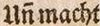

Level 3
Kürzungsstriche, die als Balken oder geschlängelte Linie über Buchstaben stehen und als Substituenten für ausgelassene Zeichen stehen,. werden als ein Codepoint unter Nutzung von standardisierten Kodierungen (Unicode), Community normierten Kodierungen (MUFI) oder durch das Koordinierungsgremium festgelegte OCR-D-Code-Definition in Nachnutzung gemeinsam getroffener Vereinbarungen internationaler Großprojekte wie IMPACT, EEBO, ECCO abgebildet. Eine Kombination von mehreren Kodierungen zu einem Zeichen erfolgt nicht.
| Vorlage | Transkription |
|---|---|
 |
froen |
|  | Uñ macht |